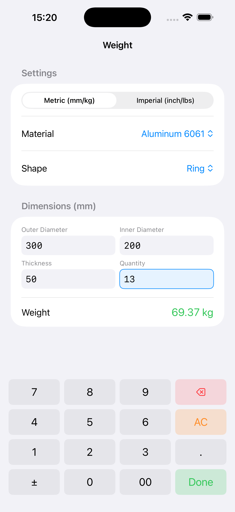

평면도와 원도 — 스프레드시트로의 왕복 없이.
익숙한 전통적인 흐름입니다. 다이얼 게이지 값을 적고, 사무실 PC로 돌아가고, Excel 매크로를 열고, Solver를 돌리고, 숫자를 보고서에 옮기는 것. CNC Workpiece Calculator 1.0.2는 이 전체 고리를 주머니에 넣었습니다 — 1초 안에 기기에서 끝나는 최소영역 평면도 솔버와 3방식 원도 피터를, 기존의 중심축 찾기·ISO 끼워맞춤·공차·무게 도구와 함께 담았습니다.
CNC 셋업과 검사, 수주 가공 공장, 품질 엔지니어, 교육 훈련을 위해. 모든 기능이 iPhone과 iPad에서 오프라인으로 동작합니다 — 계정·광고·추적·네트워크 모두 불필요.


Geometry 1.0.2 신규
검사에서 고생하는 부분이 바로 평면도와 원도입니다. 측정 자체는 다이얼 게이지로 2분 — 문제는 계산입니다. 아무도 손으로 풀지 않는 최소 Z 밴드 문제는 보통 한 대의 PC에만 사는 Excel 매크로+Solver에 맡겨지고, 파일 잠금과 매크로 경고가 지키고 있습니다.
| 단계 | Excel + Solver | CNC Workpiece Calculator |
|---|---|---|
| 측정값 입력 | 사무실 PC의 격자에 타이핑 | 기계 옆에서 바로, iPhone/iPad 전용 숫자 키패드 |
| 평면도 | Solver를 돌리고 수렴 설정을 기도 | 2단계 심플렉스 LP, 즉시, 수렴 상태 표시 |
| 수평 조정 | 평면 방정식에서 심 값을 손으로 유도 | 점별 수평 조정 조언과 예상 개선량 |
| 원도 | 워크북 관례 하나, 답 하나 | 대수·기하·최소영역 피팅을 나란히 |
| 보고서 | 스프레드시트 캡처 | 원탭 PNG(차트 + 결과) 또는 CSV |
세 가지 원 피팅, 정직하게 표기
대수 최소제곱, 기하 최적 피팅, Nelder–Mead 최소영역 탐색이 함께 실행됩니다. Excel 호환 직경 차와 더 타이트한 최소영역 반경 범위를 따로 표기 — 옛 관례와 새 관례 사이의 말다툼은 끝입니다.
6가지 차트 뷰
배치, 편차 ×10, 잔차, 3D 평면, 컨투어, 센터 줌 — 점이 입력되는 동안 실시간 전환. 선택한 점이 강조되고 뷰는 데이터에 맞춰 자동 스케일됩니다.
작업 흐름에 맞는 내보내기
원탭으로 차트와 결과 패널이 담긴 1200×800 PNG를 사진이나 공유 시트로 바로. 점은 CSV로 내보내고, 저장한 세션은 더 보기 패널에서 다시 불러옵니다.
나머지 기능들
Geometry 탭이 앱이 원래 갖춘 도구들에 합류했습니다 — 모두 오프라인, 모두 기기 안에서.
프로브 기반 중심축 찾기
측정한 X/Y 좌표를 입력(프로브 직경 보정 포함)하면 원, 사각형, 타원, 직선 슬롯, 이중 원 패턴의 중심/형상을 계산합니다.
축-구멍 끼워맞춤
공칭 치수와 공차 등급(예: H7/h6)을 빠르게 확인하고 일반적인 구멍/축 유형을 선택하며 끼워맞춤 결과를 확인할 수 있습니다.
일반 공차
치수 및 기하 공차(직진도/평면도, 수직도, 원형 흔들림 등)를 참조하고 현장에서 바로 쓸 수 있는 명확한 결과를 제공합니다.
무게 추정
일반적인 형상(판재, 관, 바, 링 등)의 무게를 재질 프리셋, 수량, 미터법/야드파운드법으로 추정합니다.
장갑 낀 손에 최적화
첫 탭에서 값이 대체되는 전용 숫자 키패드, 부호 전환, 자동 스크롤 — 측정 중에 시스템 키보드와 싸우지 않습니다.
오프라인 & 프라이빗
계정도 광고도 추적 SDK도 없습니다. 세션은 기기에 저장됩니다. 네트워크를 전혀 쓰지 않으므로 제한된 공장 네트워크에서도 작동합니다.
빠른 튜토리얼
다섯 가지 작업 흐름 — Geometry, 중심축 찾기, 끼워맞춤, 무게, 공차.




이런 분께
공장 & CNC 셋업
사무실 PC까지 갈 필요 없이, 중심축 찾기·끼워맞춤·기하 확인을 빠르게.
품질 & 검사
관례를 정직하게 표기한 최소영역 평면도·원도 — 첨부할 PNG 보고서까지.
교육 훈련
수평 조정이 실제로 무엇을 회복하는지, 피팅된 평면이 어떻게 보이는지 새 작업자에게 보여 줍니다.
자주 묻는 질문
Excel Solver 매크로를 대체할 수 있나요?
현장 사용 기준으로는, 네 — Geometry 탭은 같은 최소 Z 밴드 문제를 2단계 심플렉스 LP 솔버로 기기에서 1초 이내에 풉니다. 평면도 값, 초기 범위, 수평 조정 감소량, 피팅된 평면, 점별 조언을 표시합니다. 감사용 문서화에는 점을 CSV로 내보내 자체 도구에서 처리하면 됩니다.
원도는 어떤 값을 표시하나요 — 기존 직경 차입니까 최소영역입니까?
둘 다, 의도적으로 분리해서 표시합니다. 대수 피팅 중심의 직경 차(기존 워크북 관례)와 더 타이트한 규격 준수 최소영역 반경 범위입니다.
원도의 다이얼 게이지 값은 어떻게 입력하나요?
Indicator 모드로 전환하고, 게이지가 0을 가리키는 직경을 Ø 기준으로 입력한 뒤 부호가 있는 값을 입력합니다. 다이얼 부호 설정은 게이지 장착 방향(바늘 위 = 반경 크게/작게)에 대응합니다.
수평 조정 조언은 무엇에 근거합니까?
피팅된 최소 밴드 평면입니다. 각 측정점에 대해 제안되는 강체 보정과 보정 후 예상 잔차를 표시합니다 — 가공 전에 심기나 재수평만으로 얻을 수 있는 개선량입니다.
품질 기록용으로 결과를 내보낼 수 있나요?
네. 원탭으로 차트와 강조 결과 패널이 담긴 1200×800 PNG를 사진이나 공유 시트에 저장합니다. 측정점은 CSV로 내보낼 수 있습니다.
인터넷이 필요한가요?
아니요. 계산·차트·세션 저장·내보내기 모두 오프라인에서 작동합니다.
데이터를 수집하나요?
개발자 분석이나 추적 SDK를 사용하지 않습니다. 전체 정책은 개인정보 페이지를 확인하세요.
iPad에서 사용할 수 있나요?
네 — UI는 iPhone과 iPad 작업 흐름 모두를 위해 설계되었습니다.
버그 제보나 기능 요청은 어디로?
wangning.engineer@outlook.com로 이메일을 보내 주세요.
다운로드
현장에서 사용할 준비가 되셨나요?